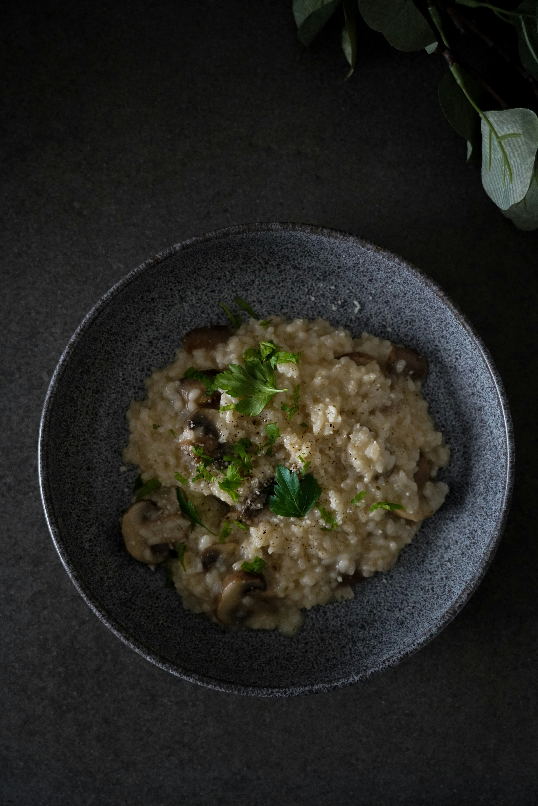

Risotto cremoso de setas

Tiempo: 40 minutos
Dificultad: Media
Raciones: 4 personas
Ingredientes
- 300 g de arroz arborio
- 250 g de setas variadas
- 1 litro de caldo de verduras
- 1 cebolla
- 50 g de queso parmesano
- Aceite de oliva
- Sal y pimienta
Preparación
- Sofríe la cebolla picada.
- Añade las setas y cocina unos minutos.
- Incorpora el arroz y remueve.
- Agrega el caldo poco a poco.
- Cocina durante 20-25 minutos.
- Añade el parmesano y sirve caliente.
Temporizador de cocina
25:00